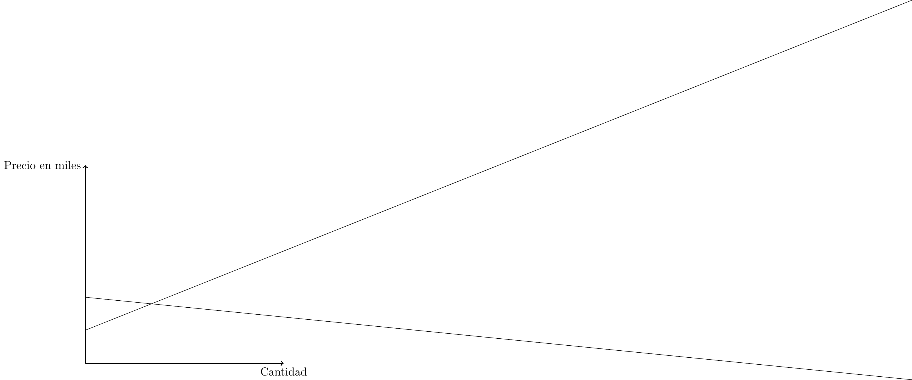
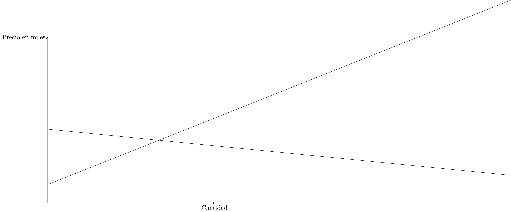

Ayudantía III:
Ejercicio I:
Suponga que las curvas de oferta y demanda del mercado de un bien X vienen dadas por \(P(Q)=1.000+400Qo\) y \(P(Q)=2000-100Qd\), respectivamente:
Calcule el equilibrio de mercado.
Ahora, Represéntelo gráficamente.
Suponga que, como consecuencia de un descenso de la renta, la curva de demanda de mercado de X pasa a ser \(P=4.000-100Qd\). Calcule y represente en el gráfico el nuevo equilibrio del mercado.
Ejercicio II:
Tenemos una empresa de chicles que gasta $100 en materia prima, $200 en insumos, $150 en mano de obra, su beneficio es de $400 y sus ingresos son el 120% de la suma de sus gastos. Calcule sus gastos generales.
Una fundación que esta atada legalmente a ser sin fines de lucro (no hay beneficios), aún así se sabe que hay gente que lucra con este organismo, ¿Cómo lo hacen?
Ejercicio III:
Grafique las siguientes ofertas:
$$P(Q)=\$3 +0,5Q$$
$$P(Q)=\$12 +8Q$$
$$P(Q)=\$50 +0,1Q$$Ejercicio IV:
Calcule la función oferta del siguiente gráfico.
RESPUESTAS:
Ejercicio I:
Tenemos que, para calcular el punto de equilibrio} \(Pd=Po=P^*\) \[1000 + 400Q^* = 2000 - 100Q^*\] \[Q^*=2\] Ahora podemos encontrar el precio de equilibrio \(P^*\) despejando el precio en cualquiera de las dos funciones: \[P^* = 2000 - 100 \cdot 2 \] \[P^*=1800\] Entonces el punto de equilibrio es (Q^,P^)=(2,1800)

\[1.000 + 400Q^* = 4000 - 100Q^*\] \[Q^*=6\] Nuevamente, buscamos el precio de equilibrio reemplazando en alguna de las nuevas ecuaciones: \[4000 - 100 \cdot 6 =P^*\] \[P^*= 3400\] Entonces el punto de equilibrio es (6,3400)

En ambos gráficos se puede identificar el punto de equilibrio como la intercepccion de las curvas de oferta y demanda. Ejercicio II:
Para calcular esto hacemos reemplazamos en la ecuación: \(B=I-f(P,P_R,G)\): \[400=1.2(100+200+150+G)-(100+200+150+G)\] \[G=1550\] Entonces los gastos generales equivalen a la suma de $1550.
De forma no ética es posible ponerse de acuerdo con uno de los proveedores de insumos, o alguno de los participantes del resto de los gastos para aumentar el precio de estos, para luego recibir una donación por parte del administrador de la institución, esta irregularidad es conocida como soborno
Ejercicio III:
\[P(Q)=\$3 +0,5Q\]

\[P(Q)=\$12 +8Q\]

\[P(Q)=\$50 +0,1Q\]

Ejercicio IV:
Paso I: Escribir ecuación. Genéricamente tenemos: \[P(Q)=a+bQ\]
Paso II: Escoger coordenadas de la recta. Escogeremos los puntos (0,5) y (25,10).
Paso III: Remplazar las distintas situaciones y solucionar.
\[P(0)=5 \Leftrightarrow a=5\] \[P(25)=10 \Leftrightarrow 10=5+b*25 \Leftrightarrow b=0.2\]
Finalmente, la ecuación resulta:
\[P(Q)=5+0,2*Q\]